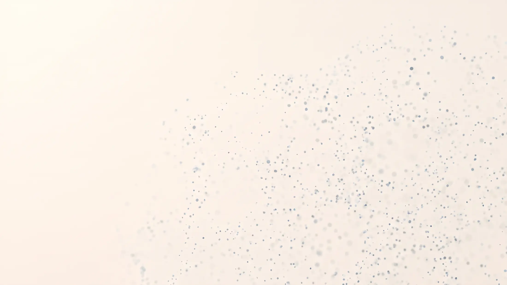
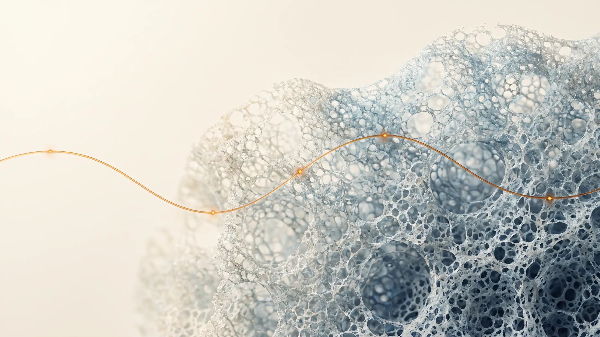
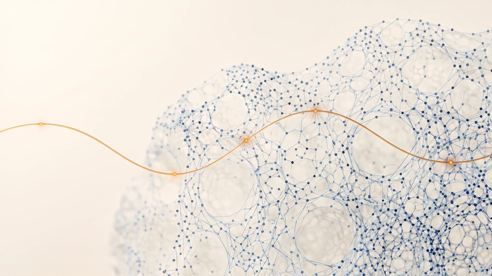
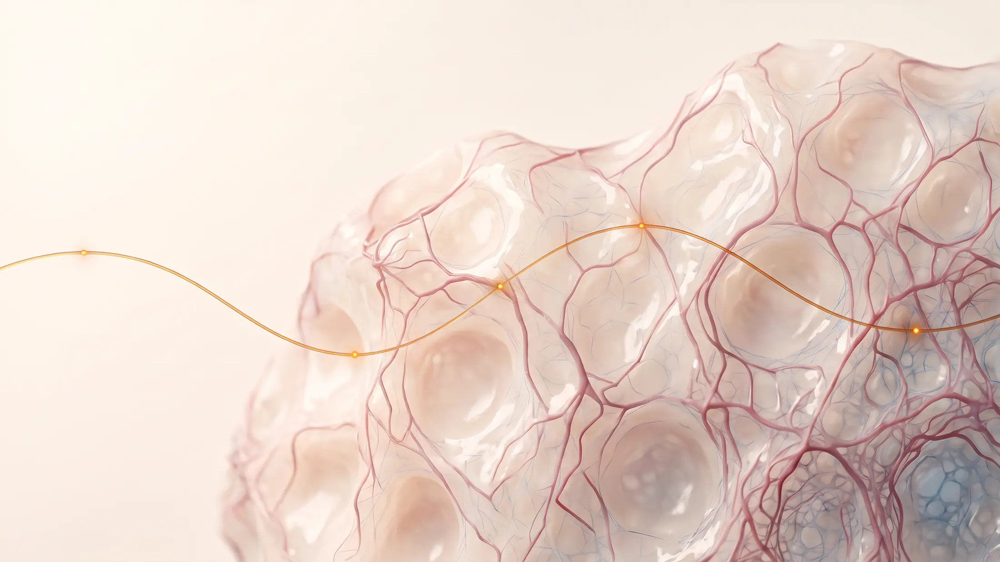
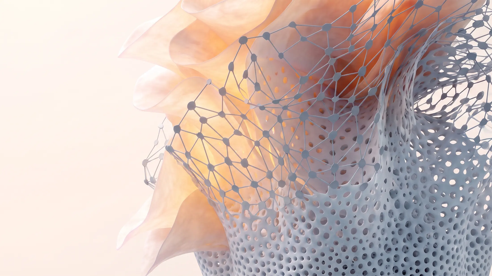

Matter
Advanced materials engineered at the microscale.

Reimagining how we design materials, model biology and regenerate oral tissues.
A drifting cloud of fine particles gathers and closes into an engineered porous scaffold; the scaffold reorganises into a lattice of computational nodes; the lattice unfurls into warm translucent living layers; and a wider view finally shows all three conditions as one continuous body.





The premise
We begin with the biological response and work backwards — designing the matter, models and experimental systems capable of producing it.
Advanced materials engineered at the microscale.
Computation to understand, simulate and design biological outcomes.
Translating design into living systems that regenerate and endure.
A single loop links what a material is made of to the biology it produces — each stage feeding the next.
Machine learning, genetic algorithms and material informatics that design dental materials with properties on demand.
Enter the AI Living Lab → Why pulp regeneration mattersWhy dental-pulp regeneration matters and what it takes to get it right — the materials, biology and evidence behind regenerating pulp-like tissue in experimental models.
Explore Matter for Vitality →